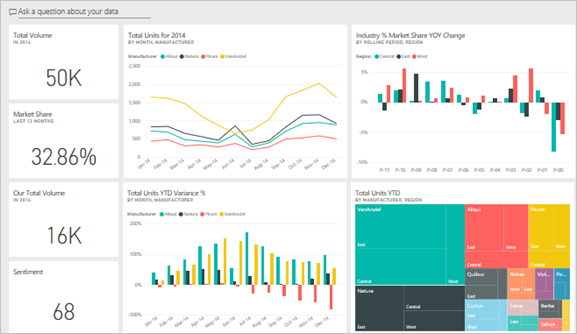

Power BI is a Data Visualization and Business Intelligence tool by Microsoft that converts data from different data sources to create various business intelligence reports. It provides interactive visualizations using which end users can create reports and interactive dashboards by themselves. It is highly recommended to download Power-BI tool before proceeding further.
Navigating Power BI:
Power BI provides a plethora of various tool and services to make creative, interactive and intelligent Business Reports.
Import/Export .csv files
On following the above steps, the dataset will be uploaded and a window will pop up. This window is called the Query Editor.
Note: If the Query Editor window does not pop up automatically. Just click on Transform Data in the above Navigation panel.
What is Query Editor?
Query Editor in Power BI is used to edit or format the data files before they are loaded into the Power BI Model. The Query Editor plays the role of an intermediate data container where you can modify data type or the way the data is stored by selecting the particular rows and columns.
Views in Power BI
There are 3 different types of views in Power BI. You can switch between the 3 views using Navigation Pane.
The 3 Views in Power BI
Report View:
Report view is a section of Power-BI where you can create any number of report pages with visualizations.
This view provides a designing environment where you can move visualizations around, copy and paste, merge, and so on.
You can add one/multiple pages here for various visualization of BI-Reports.
Data View:
Data view is a section of Power-BI that helps you inspect, explore, and understand data.
It’s different from how you view tables, columns, and data in Power Query Editor.
With Data view, you’re looking at your data after it has been loaded into the model.
Relationship View (Model View):
Model view shows all of the tables, columns, and relationships in your model.
This view can be especially helpful when your model has complex relationships between many tables.
Various tools and panels in Power-BI
The Power-BI provides various tools and services:
Modelling Ribbon:
You can perform various functionalities using this panel.
Upload datasets.
Make calculations.
Edit data types.
Format data category for a column.
Insert visualizations.
Fields list:
This list contains elements of your uploaded dataset. You can select a table or column to view in the data grid.
Navigation Pane:
This panel controls the different views of Power BI (Report/Data/Model).
Visualization Pane:
There are many different types of visualizations in Power-BI that help depict your report in various ways. This panel provides over 30 visualizations. More custom visualizations could be found online as well.
Few important visualizations are listed below.
1 Stacked Bar/Column Charts
2 Clustered Bar/Column Charts
3 Line/Area Charts
4 Ribbon Charts
5 Waterfall Charts
6 Tree Maps
7 Tables and Matrix
8 Pie Charts
9 Python-Scripts
10 R-Scripts
Building Blocks of Power-BI
There are 4 major building blocks that make Power-BI a very powerful tool.
Fact:
There is a 5th Building Block known as Tiles that is available in the Power-BI pro version.
Visualization
A visualization is a visual representation of data, like a bar graph, pie chart, a color-coded map, or other through which you can visualize the data.
The following image shows a collection of different visualizations that are there in the Power BI.
Power BI : Visualizations
Datasets:
1. A Dataset is a collection of data or a container of data that is used by PowerBI to create visualizations.
2.A Dataset is something which you import or connect to.
3.Datasets can be renamed, refreshed, removes, and explored.
Power BI : Types of Datasets
S.no Data Source Description
1. Comma Separated Value (.csv)
A Comma Separated Values (.csv) file is a plain text file that contains a list of
data. Every row can contain one or more values, which is separated by a comma.
2. Excel (.xlsx)
A workbook can have data entered manually or data, which is
queried and loaded from external data sources.
3. Databases via SQL Server:
You can connect directly to SQL Server Analysis Services Relational model databases.
4. Databases on Cloud:
You can connect live to Azure SQL Database, Azure SQL Data Warehouse, etc
to get databases.
5. Power BI (.pbi):
You can use Power BI Desktop to query and load data from external data sources.
Reports:
A report is one or more pages of interactive visuals, text, and graphics that makes up a single report.
All of the visualizations in a report come from a single dataset.
Power BI : Reports
Dashboards:
A dashboard represents a customized view of some subset of the underlying dataset(s).
A dashboard is a single canvas that has tiles, graphics, and text.
Purpose of Dashboards is to
get all the info at one place, needed to make decisions.
to monitor the most-important info about your business.
to ensure all colleagues are on the same page.
to monitor the growth of a business or product.

Let’s start learning